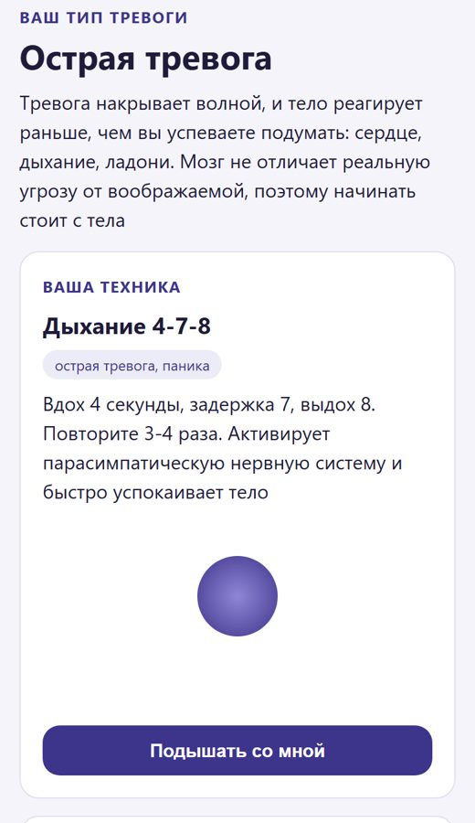
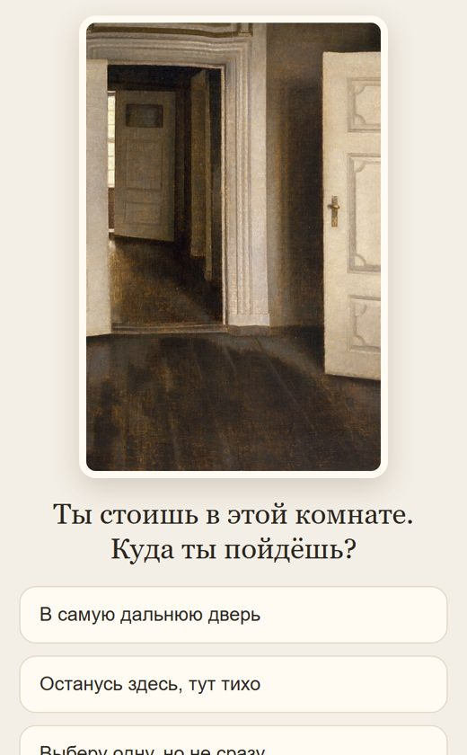
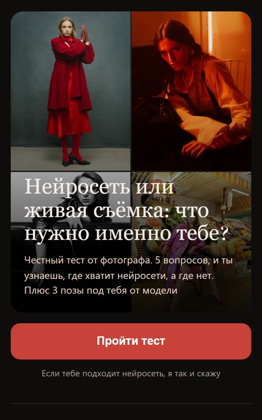
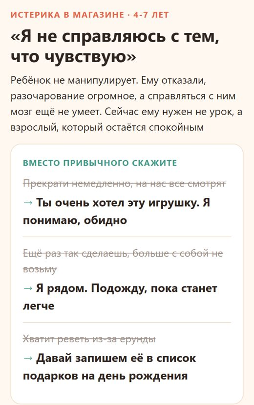
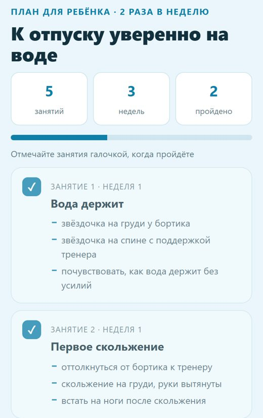

Мы собираем лид-магниты, которые дают человеку пользу про него самого прямо на экране, прогревают и сами приводят его к вашей услуге. Без бесплатных разборов и вашего времени
Вечерами выписывали самое ценное из метода, собирали PDF, снимали рилс, ставили кодовое слово. Люди пришли, нажали «скачать». И тишина
На «бесплатный гайд» у людей такой же иммунитет, как на звонок «из службы безопасности банка»: рука сама сбрасывает
Дату рождения, пару ответов, свою ситуацию. И через минуту видит результат лично про него. Такое открывают сразу и дочитывают до конца. А из ответа человек уже видит ваш подход и понимает, какую помощь получит дальше
Яндекс Метрика, один калькулятор, первые три недели
Это прототипы на материалах самих экспертов. Нажмите и пройдите сами

Её же PDF «6 техник от тревожности», только живой: тип тревоги, своя техника, дыхание прямо на экране и прогрев к консультации
Пройти ↗
Механику эксперт придумала сама в комментариях. Дальше карта дня в боте, расклады по подписке и консультация
Открыть карты ↗
Главный конкурент фотографа сейчас нейросеть. Тест честно говорит, где её хватит, и дарит 3 позы от модели
Пройти ↗
Родитель выбирает ситуацию и получает, что на самом деле говорит ребёнок и что сказать ему вместо привычного
Попробовать ↗
Человек сам собирает себе план и отмечает пройденное. Такой план не лежит в «Загрузках», с ним возвращаются
Собрать план ↗Бесплатный разбор забирает два часа вашего вечера и часто заканчивается «спасибо, подумаю». Лид-магнит отдаёт человеку пользу сам, а к вам приходят те, кто уже понял, зачем вы им нужны
Мини-продукт по подписке в Telegram-боте. Первый вопрос человек задаёт бесплатно и получает расклад. Дальше может купить ещё один вопрос, пакет из трёх вопросов или подписку на месяц
За первые две недели эксперт получил
18 000 ₽на автомате, без своего участия
Для тех, кто хочет начать с простого и посмотреть, как пойдёт
ВыбратьДля тех, к кому интересуются, но до записи не доходят
ВыбратьДля дорогих услуг, над которыми долго думают, и для тех, чьи люди уходят, не дойдя до основной услуги
ВыбратьНет. Всё собираем мы. От вас ответы на вопросы про ваш метод и «да» на готовое
На своей ссылке, которую можно ставить в посты, сторис и шапку профиля. К ней подключается бот в Telegram
Напишите нам свою сферу и сколько стоит ваша услуга, подскажем